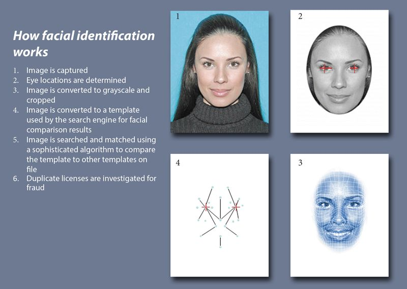

<!DOCTYPE html>
<html lang="en">
<head>
    <meta charset="UTF-8">
    <meta http-equiv="X-UA-Compatible" content="IE=edge">
    <meta name="viewport" content="width=device-width, initial-scale=1.0">
    <link rel="stylesheet" href="firstaistyle.css">
    <link rel="stylesheet" href="https://cdnjs.cloudflare.com/ajax/libs/font-awesome/6.3.0/css/all.min.css" 
    integrity="sha512-SzlrxWUlpfuzQ+pcUCosxcglQRNAq/DZjVsC0lE40xsADsfeQoEypE+enwcOiGjk/bSuGGKHEyjSoQ1zVisanQ==" crossorigin="anonymous" referrerpolicy="no-referrer" />
    <link rel="stylesheet" href=
"https://maxcdn.bootstrapcdn.com/bootstrap/4.0.0/css/bootstrap.min.css"
        integrity=
"sha384-Gn5384xqQ1aoWXA+058RXPxPg6fy4IWvTNh0E263XmFcJlSAwiGgFAW/dAiS6JXm"
        crossorigin="anonymous">
    <title>Web Journal</title>
</head>
<body>
 
   <div class="sidebar">
    <h3><b>ARTIFICIAL INTELLIGENCE</b></h3>
<ul>

    
  
      <li>
        <a href="Iot.html">
        <span><b>IoT</b></span>
      </a>
    </li>
    <hr>
    <li>
      <a href="AR.html">
      <span><b>Augmented Reality</b></span>
    </a>
  </li>
  <hr>
  <li>
    <a href="data.html">
    <span><b>Data Science</b></span>
  </a>
</li>
<hr>
<li>
  <a href="other.html">
  <span><b>Other Emerging Tech</b></span>
</a>
</li>
<hr>
      <li>
        <a href="index.html">
        <span><b>Home</b></span>
      </a>
    </li>
    <hr>
    <li>
      <a href="about.html">
      <span><b>About</b></span>
    </a>
  </li>

    
</ul>

   </div>
   <div class="main">
    <h2> <B>What is AI?</B></h2>
    <p>Artificial intelligence is the simulation of human intelligence processes by machines, especially computer systems. Specific applications of AI include expert systems, natural language processing, speech recognition and machine vision.</p>
    
   
    <h2><b>What are Advantages and Disadvantages</b></h2>
    <div class="container">
   
      <div class="row">
          <div class="col-lg-6 mb-4">
              <div class="card">
                  <div class="card-body">
                      <h5 class="card-title"><b>Advantages</b></h5>
                      <p class="card-text">
                        <ol>
                          <li>High Accuracy with fewer errors: AI machines or systems are prone to fewer errors 
                            and high accuracy as it takes decisions as per pre-experience or information</li>
                            <li>High-Speed: AI systems can be of very high-speed and fast-decision making, because 
                              of that AI systems can beat a chess champion in the Chess game.</li>
                              <li>High reliability: AI machines are highly reliable and can perform the same action 
                                multiple times with high accuracy.</li>
                                <li>Useful for risky areas: AI machines can be helpful in situations such as defusing a 
                                  bomb, exploring the ocean floor, where to employ a human can be risky.
                                  </li>
                                  <li>Digital Assistant: AI can be very useful to provide digital assistant to users such as AI 
                                    technology is currently used by various E-commerce websites to show the products as 
                                    per customer requirements.</li>
                                    <li>Useful as a public utility: AI can be very useful for public utilities such as a selfdriving car which can make our journey safer and hassle-free, facial recognition for 
                                      security purposes, Natural language processing (for search engines, for spelling 
                                      checker, for assistant like Siri, for translation like google translate), etc.</li>
                        </ol>
                      </p>

                  </div>
              </div>
          </div>
          <div class="col-lg-6 mb-4">
              <div class="card">
             

                  <div class="card-body">
                      <h5 class="card-title"><b>Disadvantages</b></h5>
                      <p class="card-text">
                        <ol>
                          <li>High Cost: The hardware and software requirement of AI is very costly as it requires lots 
                            of maintenance to meet current world requirements.</li>
                            <li>Can't think out of the box: Even we are making smarter machines with AI, but still they 
                              cannot work out of the box, as the robot will only do that work for which they are trained, 
                              or programmed.</li>
                                <li> No feelings and emotions: AI machines can be an outstanding performer, but still it does 
                                  not have the feeling so it cannot make any kind of emotional attachment with humans, and 
                                  may sometime be harmful for users if the proper care is not taken
                                  </li>
                                  <li>Increase dependence on machines: With the increment of technology, people are getting 
                                    more dependent on devices and hence they are losing their mental capabilities.</li>
                                    <li>No Original Creativity: As humans are so creative and can imagine some new ideas but 
                                      still AI machines cannot beat this power of human intelligence and cannot be creative and 
                                      imaginative.</li>
                        </ol>
                      </p>
                     
                  </div>
              </div>
          </div>
      </div>
  </div>

  <h2><b>History of AI</b></h2>
  <section style="background-color: #F0F2F5;">
    <div class="container py-5">
      <div class="main-timeline">
        <div class="timeline left">
          <div class="card">
            <div class="card-body p-4">
              <h4>Maturation of Artificial Intelligence (1943-1952)</h4>
              <p class="mb-0"><ul>
                <li>The year 1943: The first work which is now recognized as AI was done by Warren 
                  McCulloch and Walter pits in 1943. They proposed a model of artificial neurons.</li>
                  <li>The year 1949: Donald Hebb demonstrated an updating rule for modifying the 
                    connection strength between neurons. His rule is now called Hebbian learning.</li>
                    <li>The year 1950: The Alan Turing who was an English mathematician and pioneered 
                      Machine learning in 1950. Alan Turing publishes "Computing Machinery and 
                      Intelligence" in which he proposed a test. The test can check the machine's ability to 
                      exhibit intelligent behavior equivalent to human intelligence, called a Turing test.</li>
              </ul></p>
            </div>
          </div>
        </div>
        <div class="timeline right">
          <div class="card">
            <div class="card-body p-4">
              <h4> The birth of Artificial Intelligence (1952-1956)</h4>
              <p class="mb-0"><ul>
                <li></li>The year 1955: An Allen Newell and Herbert A. Simon created the "first artificial 
                intelligence program" Which was named "Logic Theorist". This program had proved 
                38 of 52 Mathematics theorems, and find new and more elegant proofs for some 
                theorems.</li>
                <li>The year 1956: The word "Artificial Intelligence" first adopted by American Computer 
                  scientist John McCarthy at the Dartmouth Conference. For the first time, AI coined as 
                  an academic field. At that time high-level computer languages such as FORTRAN, 
                  LISP, or COBOL were invented. And the enthusiasm for AI was very high at that time.</li>
              </ul></p>
            </div>
          </div>
        </div>
      
        <div class="timeline left">
          <div class="card">
            <div class="card-body p-4">
              <h4>The golden years-Early enthusiasm (1956-1974)</h4>
              <p class="mb-0">
                <ul>
                  <li>The year 1966: The researchers emphasized developing algorithms that can solve 
                    mathematical problems. Joseph Weizenbaum created the first chatbot in 1966, which 
                    was named as ELIZA</li>
                    <li>The year 1972: The first intelligent humanoid robot was built in Japan which was 
                      named WABOT-1.</li>
                </ul>
              </p>
            </div>
          </div>
        </div>
        <div class="timeline right">
          <div class="card">
            <div class="card-body p-4">
              <h4>2The first AI winter (1974-1980)
              </h4>
              <p class="mb-0">
                <ul>
                  <li>The duration between the years 1974 to 1980 was the first AI winter duration. AI winter 
                    refers to the time period where computer scientists dealt with a severe shortage of 
                    funding from the government for AI researches</li>
                    <li>During AI winters, an interest in publicity on artificial intelligence was decreased</li>
                </ul>
              </p>
            </div>
          </div>
        </div>
        <div class="timeline left">
          <div class="card">
            <div class="card-body p-4">
              <h4>A boom of AI (1980-1987)</h4>
              <p class="mb-0">
                <ul>
                  <li>The year 1980: After AI winter duration, AI came back with "Expert System". Expert 
                    systems were programmed that emulate the decision-making ability of a human expert</li>
                    <li>In the Year 1980, the first national conference of the American Association of Artificial 
                      Intelligence was held at Stanford University</li>
                </ul>
              </p>
            </div>
          </div>
        </div>

        <div class="timeline right">
          <div class="card">
            <div class="card-body p-4">
              <h4>The second AI winter (1987-1993)</h4>
              <p class="mb-0">
                <ul>
                  <li>The duration between the years 1987 to 1993 was the second AI Winter duration.</li>
                    <li>Again, Investors and government stopped in funding for AI research due to high cost 
                    but not efficient results. The expert system such as XCON was very cost-effective</li>
                </ul>
              </p>
            </div>
          </div>
        </div>

        <div class="timeline left">
          <div class="card">
            <div class="card-body p-4">
              <h4>The emergence of intelligent agents (1993-2011)</h4>
              <p class="mb-0">
                <ul>
                  <li>The year 1997: In the year 1997, IBM Deep Blue beats world chess champion, Gary 
                    Kasparov, and became the first computer to beat a world chess champion.
                    </li>
                    <li>The year 2002: for the first time, AI entered the home in the form of Roomba, a 
                      vacuum cleaner</li>
                      <li>The year 2006: AI came into the Business world until the year 2006. Companies like 
                        Facebook, Twitter, and Netflix also started using AI.</li>
                       
                </ul>
              </p>
            </div>
          </div>
        </div>
        <div class="timeline right">
          <div class="card">
            <div class="card-body p-4">
              <h4>Deep learning, big data and artificial general intelligence (2011-present)
              </h4>
              <p class="mb-0">
                <ul>
                  <li>The year 2011: In the year 2011, IBM's Watson won jeopardy, a quiz show, where 
                    it had to solve complex questions as well as riddles. Watson had proved that it could 
                    understand natural language and can solve tricky questions quickly
                    </li>
                    <li>The year 2012: Google has launched an Android app feature "Google now", which 
                      was able to provide information to the user as a prediction</li>
                      <li>The year 2014: In the year 2014, Chatbot "Eugene Goostman" won a competition 
                        in the infamous "Turing test."</li>
                        <li>The year 2018: The "Project Debater" from IBM debated on complex topics with 
                          two master debaters and also performed extremely well</li>
                          <li>Google has demonstrated an AI program "Duplex" which was a virtual assistant 
                            and which had taken hairdresser appointment on call, and the lady on the other side 
                            didn't notice that she was talking with the machine</li>
                       
                </ul>
              </p>
            </div>
          </div>
        </div>
      </div>
    </div>
  </section>
<HR>
  <h3><b>Examples of AI</b></h3>

  <div class="row">
    <div class="column">
      
      <div class="card" style="width: 18rem;">
        
        <div class="card-body">
          <p class="card-text"><B>E-PAYMENT</B></p>
        </div>
      </div>
    
    </div>

    <div class="column">
      <div class="card" style="width: 18rem;">
        
        <div class="card-body">
          <p class="card-text"><B>FACE RECOGNITION</B></p>
        </div>
      </div>
    
    </div>

    <div class="column">
      <div class="card" style="width: 18rem;">
        
        <div class="card-body">
          <p class="card-text"><B>DIGITAL ASSISTANCE</B></p>
        </div>
      </div>
    
    </div>

    <div class="column">
      <div class="card" style="width: 18rem;">
        
        <div class="card-body">
          <p class="card-text"><B>CHATGPT</B></p>
        </div>
      </div>
    
    </div>
  
  </div>


<HR>

<h3><B>Levels of AI</B></h3>
<P>Stage 1 – Rule-Based Systems<BR>
  The most common uses of AI today fit in this bracket, covering everything from business software 
  (Robotic Process Automation) and domestic appliances to aircraft autopilots.
  </P>
<p>Stage 3 – Context Awareness and Retention<br>
  ➢ Algorithms that develop information about the specific domain they are being applied 
  in. They are trained on the knowledge and experience of the best humans, and their 
  knowledge base can be updated as new situations and queries arise. Well, known 
  applications of this level are chatbots and “roboadvisors”.
  </p>
  <p>Stage 3 – Domain-Specific Expertise<br>
    ➢ Going beyond the capability of humans, these systems build up expertise in a specific 
    context taking in massive volumes of information which they can use for decision 
    making. Successful use cases have been seen in cancer diagnosis and the well-known 
    Google Deepmind’s AlphaGo. Currently, this type is limited to one domain only would 
    forget all it knows about that domain if you started to teach it something else. </p>
    <p>Stage 4 – Reasoning Machines<br>
      ➢ These algorithms have some ability to attribute mental states to themselves and others 
      – they have a sense of beliefs, intentions, knowledge, and how their own logic works. 
      This means they could reason or negotiate with humans and other machines. At the 
      moment these algorithms are still in development, however, commercial applications 
      are expected within the next few years.</p>
      <p>Stage 5 – Self Aware Systems / Artificial General Intelligence (AGI)<br>
        ➢ These systems have human-like intelligence – the most commonly portrayed AI in 
        media – however, no such use is in evidence today. It is the goal of many working in 
        AI and some believe it could be realized already from 2024</p>
        <p>Stage 6 – Artificial Superintelligence (ASI)<br>
          ➢ AI algorithms can outsmart even the most intelligent humans in every domain. 
          Logically it is difficult for humans to articulate what the capabilities might be, yet we 
          would hope examples would include solving problems we have failed to so far, such as 
          world hunger and dangerous environmental change. </p>
          <p>Stage 7 – Singularity and Transcendence<br>
            ➢ This is the idea that development provided by ASI (Stage 6) leads to a massive 
            expansion in human capability. Human augmentation could connect our brains to each 
            other and to a future successor of the current internet, creating a “hive mind” that shares 
            ideas, solves problems collectively, and even gives others access to our dreams as 
            observers or participants.</p>

  <hr>
            <h3><b>Types of AI</b></h3>

            <p><b>A. Based on Capabilities</b></p>
            <p>Weak AI or Narrow AI:<br>
              ➢ Narrow AI is a type of AI which is able to perform a dedicated task with 
              intelligence. The most common and currently available AI is Narrow AI in the 
              world of Artificial Intelligence.</p>
              <p>2. General AI:<br>
                ➢ General AI is a type of intelligence that could perform any intellectual task with 
                efficiency like a human.<br>
                ➢ The idea behind the general AI to make such a system that could be smarter and 
                think like a human on its own.</p>
                <p>3. Super AI:<br>
                  ➢ Super AI is a level of Intelligence of Systems at which machines could surpass 
                  human intelligence, and can perform any task better than a human with cognitive 
                  properties. This refers to aspects like general wisdom, problem solving and 
                  creativity. It is an outcome of general AI.<br>
                  ➢ Some key characteristics of strong AI include capability include the ability to think, 
                  to reason solve the puzzle, make judgments, plan, learn, and communicate on its 
                  own.<br>
                  ➢ Super AI is still a hypothetical concept of Artificial Intelligence. The development 
                  of such systems in real is still a world-changing task.</p>
                  <p><b>B. Based on functionality</b></p>
                  <p>1. Reactive Machines<br>
                  
                    ➢ Purely reactive machines are the most basic types of Artificial Intelligence.<br>
                    ➢ Such AI systems do not store memories or past experiences for future actions.<br>
                    ➢ These machines only focus on current scenarios and react on it as per possible best 
                    action.</p>
                    <p>2. Limited Memory<br>
                      ➢ Limited memory machines can store past experiences or some data for a short 
                      period of time.<br>
                      ➢ These machines can use stored data for a limited time period only.<br>
                      ➢ Self-driving cars are one of the best examples of Limited Memory systems. These 
                      cars can store the recent speed of nearby cars, the distance of other cars, speed 
                      limits, and other information to navigate the road.</p>
                      <p>3. Theory of Mind<br>
                        ➢ Theory of Mind AI should understand human emotions, people, beliefs, and be able 
                        to interact socially like humans.<br>
                        ➢ This type of AI machines is still not developed, but researchers are making lots of 
                        efforts and improvement for developing such AI machines.</p>
                        <p>4. Self-Awareness<br>
                          ➢ Self-awareness AI is the future of Artificial Intelligence. These machines will be 
                          super intelligent and will have their own consciousness, sentiments, and selfawareness.<br>
                          ➢ These machines will be smarter than the human mind.<br>
                          ➢ Self-Awareness AI does not exist in reality still and it is a hypothetical concept.</p>
  </div>
 

    
   </div>
   <div class="main">
    <h5><b> Applications Of AI in Agriculture</b></h5>
   <div class="container .con">
    <div class="row">
       
           <div class="col-lg-6 mb-4">
            <div class="card">
              <iframe width="500" height="315" src="https://www.youtube.com/embed/90SY5wAZdbc" title="YouTube video player" frameborder="0" allow="accelerometer; autoplay; clipboard-write; encrypted-media; gyroscope; picture-in-picture; web-share" allowfullscreen></iframe>
                <div class="card-body">
                    <h6 class="card-title">AI Helping farmers Detect Plant Diseaeses</h6>
                    
                   
                </div>
            </div>
        </div>
        <div class="col-lg-6 mb-4">
            <div class="card">
              <iframe width="500" height="315" src="https://www.youtube.com/embed/f90zh9NRErw" title="YouTube video player" frameborder="0" allow="accelerometer; autoplay; clipboard-write; encrypted-media; gyroscope; picture-in-picture; web-share" allowfullscreen></iframe>

                <div class="card-body">
                    <h6 class="card-title">How is Japan Reshaping Its Agirculture by Harnessing Smart-Farming Technology</h6>
                    
                   
                </div>
            </div>
        </div>
    </div>
</div>

<h5><b> Applications Of AI in Medicine</b></h5>
   <div class="container .con">
    <div class="row">
       
           <div class="col-lg-6 mb-4">
            <div class="card">
              <iframe width="500" height="315" src="https://www.youtube.com/embed/nEahhnk3VvM" title="YouTube video player" frameborder="0" allow="accelerometer; autoplay; clipboard-write; encrypted-media; gyroscope; picture-in-picture; web-share" allowfullscreen></iframe>
                <div class="card-body">
                    <h6 class="card-title">AI in Medicine_Possible Applications and Potentials</h6>
                    
                   
                </div>
            </div>
        </div>
        <div class="col-lg-6 mb-4">
            <div class="card">
              <iframe width="500" height="315" src="https://www.youtube.com/embed/2fvhSSB1aNg" title="YouTube video player" frameborder="0" allow="accelerometer; autoplay; clipboard-write; encrypted-media; gyroscope; picture-in-picture; web-share" allowfullscreen></iframe>
                <div class="card-body">
                    <h6 class="card-title">Saving Lives with AI</h6>
                    
                   
                </div>
            </div>
        </div>
    </div>
</div>


</div>


</body>
</html>